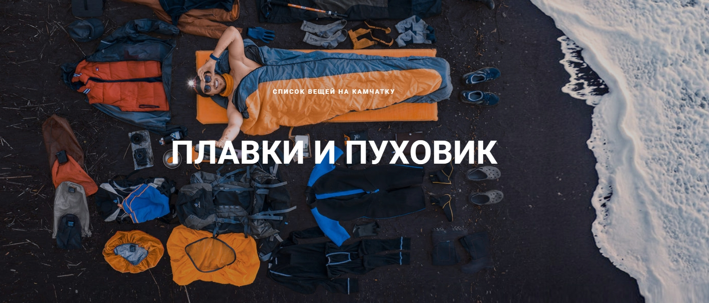

СПИСОК ВЕЩЕЙ НА КАМЧАТКУ.
Камчатка знаменита переменчивой погодой.
Утром вы можете мерзнуть в двух куртках, а
вечером загорать
в одних плавках на черном
вулканическом песке.
Теперь рассмотрим список детальней - начнем по порядку, по старой традиции, с
А теперь переходим к главному. Хочешь солнца - готовься к дождю: главное на Камчатке - дожде-ветрозащита!
Дожде - ветрозащита.
Какая обувь нужна на Камчатку?
Она должна быть удобной и крепкой! Вот что нам понадобиться:
Что еще нужно взять с собой?
Текст и фото: Михаил Логинов
Если информация была вам полезна, поделитесь с друзьями